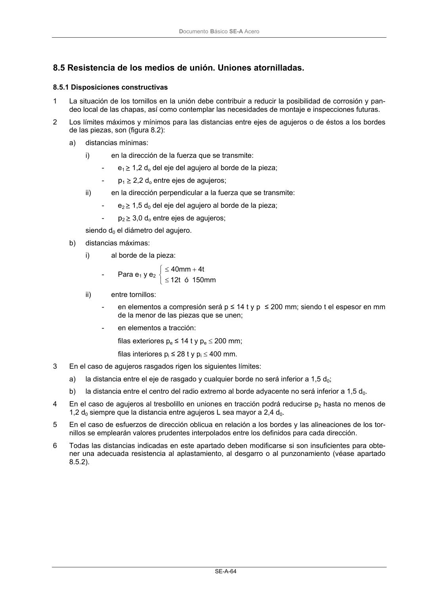

DB-SE-A Acero · edición 2007-10-23 · capa oficial
Documento DB-SE-A-oficial · SHA-256 del PDF 9ed9ea694aabfbda3bfbbef40dfe9223fde05d13c35bc2ba9751e5a96a22a64f
Copia fiel del PDF fuente · Fuente oficial
Ficha de la disposición en la fuente oficial
Formatos: JSON del segmento · Markdown
8.4.2 Clasificación de las uniones por resistencia. 1 Nominalmente articuladas. Son aquellas capaces de transmitir los esfuerzos obtenidos en el análisis global de la estructura y su resistencia de cálculo a flexión no es mayor de la cuarta parte del momento resistente plástico de cálculo de la pieza de menor resistencia unida y siempre que exista una capacidad de giro sufi- ciente para permitir que en la estructura se formen todas las rótulas plásticas necesarias en el mo- delo de análisis adoptado bajo las cargas consideradas. 2 Totalmente resistentes (o de resistencia completa). Su resistencia es mayor o igual que la de los elementos que conecta. Si en una unión con resisten- cia completa la relación entre su momento resistente, Mj.Rd, y el momento resistente plástico, Mpl.Rd, de la menor de las barras que conecta, es superior a 1,20, no es necesario considerar la capacidad de rotación de la unión. 3 Parcialmente resistentes. Su resistencia es menor que la de los elementos unidos, aunque debe ser capaz de transmitir las fuerzas y momentos determinados en el análisis global de la estructura. La rigidez de estas unio- nes debe ser suficiente para evitar que se supere la capacidad de rotación de las rótulas plásticas que se deban formar en la estructura bajo las cargas consideradas. Si se requieren rótulas plásti- cas en las uniones parcialmente resistentes, éstas deben tener capacidad de rotación suficiente para permitir la formación en la estructura de todas las rótulas plásticas necesarias. DocumentoBásico SE-A Acero SE-A-64
